(C’est dimanche soir. Les quatre copains retournent chez Éliane
et Régine.)
Régine
Qui sont les gens avec qui tu travailles, Éliane?
les gens (masculine plural)
people
avec qui
with whom
Qui sont les gens avec qui tu travailles, Éliane?
Who are the people you work with, Éliane?
Éliane
Bon, d’abord, il y a Solange Delorme. C’est une jeune femme
qui travaille avec nous depuis un mois, un mois et demi.
bon
well
d’abord
first, first of all
Bon, d’abord, il y a Solange Delorme. C’est une jeune femme
qui travaille avec nous depuis un mois, un mois et demi.
Well, first of all there’s Solange Delorme. She’s a young
woman who has been working with us for a month, a month and a
half.
Daniel
Vous vous entendez bien?
s’entendre
to get along
s’entendre bien
to get along well
Vous vous entendez bien?
Do you get along well?
Éliane
Ah, oui, Solange est très sympathique, très intelligente
aussi. Elle a à peu près mon âge. C’est une jeune femme
chaleureuse, ouverte. Elle est très cultivée et chargée de la
correction du contenu des sites Web.
à peu près
about, approximately
l’âge (masculine)
age
Elle a à peu près mon âge.
She’s about my age.
chaleureux
warm
ouvert
open, open-minded
cultivé
educated, cultured
chargé de
in charge of
la correction
correction
le contenu
content
la correction du contenu
the correction of the content
un site Web
a Web site
Ah, oui, Solange est très sympathique, très intelligente
aussi. Elle a à peu près mon âge. C’est une jeune femme
chaleureuse, ouverte. Elle est très cultivée et chargée de la
correction du contenu des sites Web.
Oh, yes. Solange is very nice, very intelligent, too. She's
about my age. She’s a warm, open-minded young woman. She is
very well-educated and is in charge of correcting the content
of Web sites.
Régine
Qui encore?
encore
more, else
Qui encore?
Who else?
Éliane
Ensuite, il y a Karim Halabi. Lui, il a trente ans, diplômé en
gestion de Paris VII. C’est le bras droit de M. Jolivet, qui a
entièrement confiance en lui. Karim est marié, avec deux
enfants.
Karim Halabi
Arabic name and surname
un diplômé
a graduate
un diplômé en gestion
a graduate in business administration
le bras droit
right-hand man (literally: right arm)
la confiance
trust
avoir confiance en qqn, en qqch
to trust someone, something
avoir entièrement confiance en qqn
to trust someone completely
qui a entièrement confiance en lui
who trusts him completely
marié
married
Ensuite, il y a Karim Halabi. Lui, il a trente ans, diplômé en
gestion de Paris VII. C’est le bras droit de M. Jolivet, qui a
entièrement confiance en lui. Karim est marié, avec deux
enfants.
Then there’s Karim Halabi. He’s thirty years old, a business
administration graduate of Paris Sept. He’s the right-hand man
of Mr. Jolivet, who trusts him completely. Karim is married,
with two children.
Daniel
Rien de suspect jusqu’à maintenant.
suspect
suspicious
rien de suspect
nothing suspicious
jusqu’à maintenant
up to now, so far
Rien de suspect jusqu’à maintenant.
Nothing suspicious so far.
Éliane
Après, il y a Julien Fontenay, un informaticien spécialisé
dans les télécommunications.
un informaticien
computer specialist
spécialisé dans
specialized, specializing in
Après, il y a Julien Fontenay, un informaticien spécialisé
dans les télécommunications.
Then there’s Julien Fontenay, a computer expert specializing
in telecommunications.
Paul
Quel est son rôle dans l’entreprise?
un rôle
role
Quel est son rôle dans l’entreprise?
What’s his role in the company?
Éliane
M. Jolivet compte sur lui, surtout dans le domaine de la
conception. J’ai appris par ouï-dire que son nouveau projet
peut rapporter à CyberAvenir cinq cents millions d’euros.
compter sur qqn
to rely on someone
surtout
especially
le domaine
field, area
la conception
design
dans le domaine de la conception
in the area of design
l’ouï-dire (masculine)
hearsay, word of mouth
par ouï-dire
by word of mouth
J’ai appris par ouï-dire que...
I’ve heard people say that...
un projet
project, plan
son nouveau projet
his new project
rapporter
to bring in (money)
un million de
a million
cinq cents millions d’euros
500 million euros
M. Jolivet compte sur lui, surtout dans le domaine de la
conception. J’ai appris par ouï-dire que son nouveau projet
peut rapporter à CyberAvenir cinq cents millions d’euros.
Mr. Jolivet relies on him, especially in the area of design.
I’ve heard people say that his new project might earn 500
million euros for CyberAvenir.
Régine
Qui d’autre?
autre
other, else
Qui d’autre?
Who else?
Éliane
Monsieur Toësca. Lui, c’est un type dur, grognon. C’est un
costaud, fort comme un bœuf. Il mesure presque un mètre
quatre-vingt-dix et pèse au moins cent kilos.
dur
hard, tough
grognon
surly, gruff
un type
guy
C’est un type dur, grognon.
He’s a tough, gruff guy.
un costaud
big, strong, strapping man
fort (feminine: forte)
strong
fort comme an bœuf
strong as an ox
mesurer
to measure (used to express a person’s height)
un mètre
meter (metric unit of length, about 39 inches)
un mètre quatre-vingt-dix
one meter 90 centimeters (6’10”)
peser
to weigh
au moins
at least
un kilo
kilogram (metric unit of weight, about 2.2 pounds)
cent kilos
100 kilograms (about 222 pounds)
Monsieur Toësca. Lui, c’est un type dur, grognon. C’est un
costaud, fort comme un bœuf. Il mesure presque un mètre
quatre-vingt-dix et pèse au moins cent kilos.
Mr. Toësca. He’s a tough, gruff guy. He’s a big, strapping
man, strong as an ox. He's almost one meter 90 centimeters
tall and weighs at least 100 kilograms.
Daniel
Et qu’est-ce qu’il fait à CyberAvenir?
Et qu’est-ce qu’il fait à CyberAvenir?
And what does he do at CyberAvenir?
Éliane
Il participe à la création des sites Web. Il paraît qu’il est
assez doué. Moi, je me sens mal à l’aise avec lui. Son
attitude hostile est énervante. Il fait grise mine à tout le
monde.
participer à qqch
to participate/take part in something
la création
creation
il paraît que...
it seems that...
doué
gifted
assez doué
rather gifted, rather good at it
à l’aise
at ease, comfortable
mal à l’aise
uncomfortable
se sentir mal à l’aise avec qqn
to feel uncomfortable with someone
une attitude
an attitude
hostile
hostile
énervant
irritating
la mine
look, appearance
faire grise mine à tout le monde
to be grouchy with everyone
Il participe à la création des sites Web. Il paraît qu’il est
assez doué. Moi, je me sens mal à l’aise avec lui. Son
attitude hostile est énervante. Il fait grise mine à tout le
monde.
He helps create Web sites. It seems that he’s rather good at
it. I feel uncomfortable with him. His hostile attitude is
irritating. He's grouchy with everyone.
(Ils entrent chez Éliane et Régine. Le signal du répondeur
clignote.)
Régine
Regarde! Il y a un message sur le répondeur. Écoutons-le.
un message
message
Regarde! Il y a un message sur le répondeur. Écoutons-le.
Look! There’s a message on the answering machine. Let’s listen
to it.
M. Jolivet
Ce message est pour Éliane Kumassi. C’est M. Jolivet qui vous
téléphone. Je vous prie de venir me voir dans mon bureau lundi
matin à dix heures précises. À demain, Mademoiselle.
téléphoner à qqn
to phone someone
je vous prie de + infinitive
I’m requesting that you...
venir
to come
voir
to see
Je vous prie de venir me voir...
I’m requesting that you come to see me...
à dix heures précises
at ten o’clock sharp
Ce message est pour Éliane Kumassi. C’est M. Jolivet qui vous
téléphone. Je vous prie de venir me voir dans mon bureau lundi
matin à dix heures précises. À demain, Mademoiselle.
This message is for Éliane Kumassi. This is Mr. Jolivet
calling. I’m requesting that you come to see me in my office
Monday morning at ten o’clock sharp. See you tomorrow.
Éliane
Vous avez entendu le ton de sa voix? Comme il est fâché contre
moi. Il est sûrement au courant de tout ce qui s’est passé. Je
n’ai pas envie d’aller au bureau.
entendre
to hear
entendu
past participle of entendre
vous avez entendu
you heard
le ton
tone
la voix
voice
le ton de sa voix
the tone of his voice
fâché
angry
fâché contre qqn
angry at someone
fâché contre moi
angry at me
sûrement
surely
être au courant de qqch
to be informed of, aware of something
se passer
to happen
tout ce qui s’est passé
everything that’s happened
avoir envie de faire qqch
to feel like doing something
Vous avez entendu le ton de sa voix? Comme il est fâché contre
moi. Il est sûrement au courant de tout ce qui s’est passé. Je
n’ai pas envie d’aller au bureau.
Did you hear the tone of his voice? He’s so angry at me. He’s
surely aware of everything that's happened. I don’t feel like
going to the office.
Paul
Ne te tracasse pas. Je suis libre demain. Je vais
t’accompagner.
se tracasser
to worry
Ne te tracasse pas.
Don’t worry.
libre
free
Je suis libre.
I’m free.
accompagner
to accompany, go with
Ne te tracasse pas. Je suis libre demain. Je vais
t’accompagner.
The closest English equivalents to the French closed é and
closed o sounds in English are diphthongs. In French,
however the closed é and closed o are pure vowels -
the position of the tongue and mouth does not change during the
articulation of the sound.
Practice the French closed é by pronouncing the following words
and phrases after the speaker.
chargé
marié
spécialisé
divorcé
fiancé
été
mettez
accéléré
énervé
aller
dépanner
employé
fâché
doué
Practice the French closed o by pronouncing the following
words and phrases after the speaker.
beau
nouveau
bateau
chaud
bureau
kilo
cadeau
chasse d’eau
couteau
morceau
vélo
panneau
rideau
La Structure De La Langue 1: Le Vocabulaire
Look at the following adjectives and the nouns that correspond to
them:
chaleureux
la chaleur
warmth
ouvert
l’ouverture
opening, openness
intelligent
l’intelligence
intelligence
sympathique
la sympathie
pleasantness, niceness
Learning to recognize related parts of speech in different words
(nouns, adjectives, verbs, adverbs) will help you build your
vocabulary. Once you learn the word chaleureux, you should be
able to guess the meaning of la chaleur.
4. Exercice Écrit 1
Complete the following chart by writing the adjective that
corresponds to each noun and the English translation of the noun.
la nouveauté
(show adjective)
nouveau
(show translation)
newness, novelty
l’hostilité
(show adjective)
hostile
(show translation)
hostility
la spécialisation
(show adjective)
spécialisé
(show translation)
specialization
la culture
(show adjective)
cultivé
(show translation)
education, culture
le divorce
(show adjective)
divorcé
(show translation)
divorce
les fiançailles
(show adjective)
fiancé
(show translation)
engagement
le mariage
(show adjective)
marié
(show translation)
marriage
la bêtise
(show adjective)
bête
(show translation)
stupidity, silliness
la paresse
(show adjective)
paresseux
(show translation)
laziness
la lourdeur
(show adjective)
lourd
(show translation)
heaviness
5. Exercices oraux 1-3
Exercice oral 1: Les bonnes qualités
The speaker will use a noun to tell you what personal qualities he
admires. Confirm the existence of those qualities, using the
corresponding adjective.
J’admire sa générosité.
Oui, il est très généreux.
Modèle
Commençons
Exercice oral 2: Les mauvaises qualités
Two students are discussing a character from a novel. Confirm the
existence of the qualities discussed, using the corresponding
adjective.
Je n’aime pas son matérialisme.
Oui, il est très matérialiste.
Modèle
Commençons
Exercice oral 3: D’autres qualités
The speaker will use a noun to describe the personality traits of
a young woman. Confirm the existence of those qualities, using the
corresponding adjective.
Je trouve qu’elle est très timide.
Oui, elle est très timide.
Modèle
Commençons
Exercice Écrit 2
Match each of the graphics with the expression it illustrates.
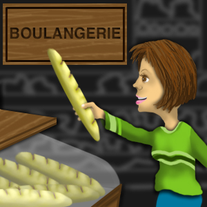
Elle est à bout de forces.
Elle balaie le grenier.
Elle fait des haltères.
Elle fait le linge.
Elle s’ennuie à mourir.
Elle prend une baguette.
Elle fait de la varappe.
Elle a un chat à ses trousses.
Show Answer
F: Elle prend une baguette.
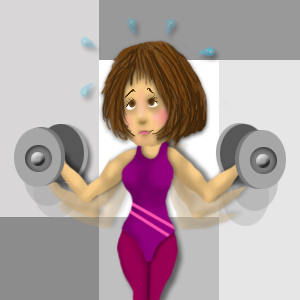
Elle est à bout de forces.
Elle balaie le grenier.
Elle fait des haltères.
Elle fait le linge.
Elle s’ennuie à mourir.
Elle prend une baguette.
Elle fait de la varappe.
Elle a un chat à ses trousses.
Show Answer
C: Elle fait des haltères.
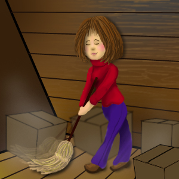
Elle est à bout de forces.
Elle balaie le grenier.
Elle fait des haltères.
Elle fait le linge.
Elle s’ennuie à mourir.
Elle prend une baguette.
Elle fait de la varappe.
Elle a un chat à ses trousses.
Show Answer
B: Elle balaie le grenier.
Elle est à bout de forces.
Elle balaie le grenier.
Elle fait des haltères.
Elle fait le linge.
Elle s’ennuie à mourir.
Elle prend une baguette.
Elle fait de la varappe.
Elle a un chat à ses trousses.
Show Answer
G: Elle fait de la varappe.
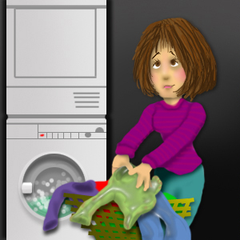
Elle est à bout de forces.
Elle balaie le grenier.
Elle fait des haltères.
Elle fait le linge.
Elle s’ennuie à mourir.
Elle prend une baguette.
Elle fait de la varappe.
Elle a un chat à ses trousses.
Show Answer
D: Elle fait le linge.
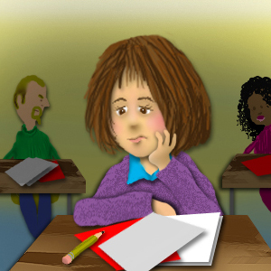
Elle est à bout de forces.
Elle balaie le grenier.
Elle fait des haltères.
Elle fait le linge.
Elle s’ennuie à mourir.
Elle prend une baguette.
Elle fait de la varappe.
Elle a un chat à ses trousses.
Show Answer
E: Elle s’ennuie à mourir.
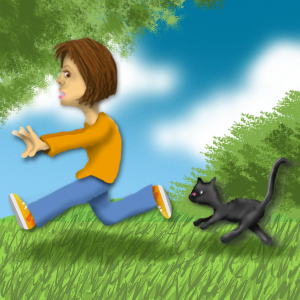
Elle est à bout de forces.
Elle balaie le grenier.
Elle fait des haltères.
Elle fait le linge.
Elle s’ennuie à mourir.
Elle prend une baguette.
Elle fait de la varappe.
Elle a un chat à ses trousses.
Show Answer
H: Elle a un chat à ses trousses.
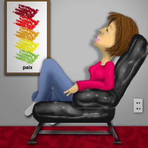
Elle est à bout de forces.
Elle balaie le grenier.
Elle fait des haltères.
Elle fait le linge.
Elle s’ennuie à mourir.
Elle prend une baguette.
Elle fait de la varappe.
Elle a un chat à ses trousses.
Show Answer
A: Elle est à bout de forces.
Exercice Écrit 3
Match each of the graphics with the expression it illustrates.
Il fait grise mine à tout le monde.
Il fait un froid de canard.
Il fait une chaleur à mourir.
Il pleut des cordes.
Je suis libre aujourd’hui.
On s’est bien amusés.
La chambre donne sur le jardin.
On fait le tour du propriétaire.
Show Answer
D: Il pleut des cordes.
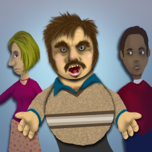
Il fait grise mine à tout le monde.
Il fait un froid de canard.
Il fait une chaleur à mourir.
Il pleut des cordes.
Je suis libre aujourd’hui.
On s’est bien amusés.
La chambre donne sur le jardin.
On fait le tour du propriétaire.
Show Answer
A: Il fait grise mine à tout le monde.
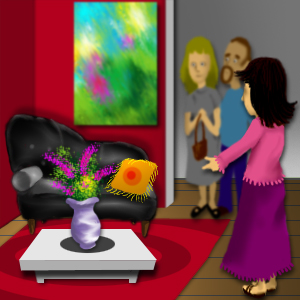
Il fait grise mine à tout le monde.
Il fait un froid de canard.
Il fait une chaleur à mourir.
Il pleut des cordes.
Je suis libre aujourd’hui.
On s’est bien amusés.
La chambre donne sur le jardin.
On fait le tour du propriétaire.
Show Answer
H: On fait le tour du propriétaire.
Il fait grise mine à tout le monde.
Il fait un froid de canard.
Il fait une chaleur à mourir.
Il pleut des cordes.
Je suis libre aujourd’hui.
On s’est bien amusés.
La chambre donne sur le jardin.
On fait le tour du propriétaire.
Show Answer
F: On s’est bien amusés.
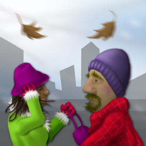
Il fait grise mine à tout le monde.
Il fait un froid de canard.
Il fait une chaleur à mourir.
Il pleut des cordes.
Je suis libre aujourd’hui.
On s’est bien amusés.
La chambre donne sur le jardin.
On fait le tour du propriétaire.
Show Answer
B: Il fait un froid de canard.
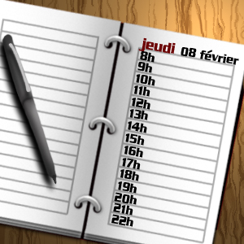
Il fait grise mine à tout le monde.
Il fait un froid de canard.
Il fait une chaleur à mourir.
Il pleut des cordes.
Je suis libre aujourd’hui.
On s’est bien amusés.
La chambre donne sur le jardin.
On fait le tour du propriétaire.
Show Answer
E: Je suis libre aujourd’hui.
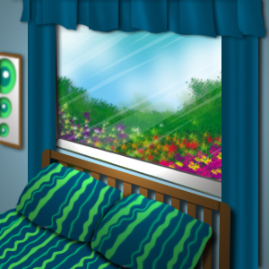
Il fait grise mine à tout le monde.
Il fait un froid de canard.
Il fait une chaleur à mourir.
Il pleut des cordes.
Je suis libre aujourd’hui.
On s’est bien amusés.
La chambre donne sur le jardin.
On fait le tour du propriétaire.
Show Answer
G: La chambre donne sur le jardin.
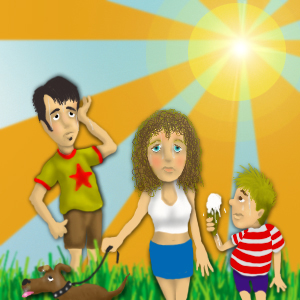
Il fait grise mine à tout le monde.
Il fait un froid de canard.
Il fait une chaleur à mourir.
Il pleut des cordes.
Je suis libre aujourd’hui.
On s’est bien amusés.
La chambre donne sur le jardin.
On fait le tour du propriétaire.
Show Answer
C: Il fait une chaleur à mourir.
La Structure De La Langue 2: Les Nombres À Partir De 10.000
Note that when you write numbers in French, a period separates
thousands.
3.000.000 d’habitants
3,000,000 inhabitants
The comma, la virgule, is used in decimals.
6, 7 (six virgule sept) pour cent
6.7 percent
In recent years these standards have been loosely applied in online
spaces, as US culture and language tend to dominate online spaces.
Different French-speaking nations may also handle numbers differently.
In some cases the meaning will need to be inferred from context - for
instance, 4, 500% is unlike to be four thousand and five hundred
percent.
Numbers from 10,000 to 999,999 are formed with mille:
11.000
onze mille
11.500
onze mille cinq cents
20.000
vingt mille
30.000
trente mille
40.000
quarante mille
70.000
soixante-dix mille
80.000
quatre-vingts mille
81.000
quatre-vingt-un mille
85.000
quatre-vingt-cinq mille
90.000
quatre-vingt-dix mille
99.000
quatre-vingt-dix-neuf mille
100.000
cent mille
200.000
deux cent mille
999.999
neuf cent quatre-vingt-dix-neuf mille neuf cent
quatre-vingt-dix-neuf
The word million is a noun in French. It is followed
by de when no other number follows.
un million
de
francs
a million francs
cinq cents millions
d’
euros
five hundred million euros
When another number follows million(s), the word de is
not used.
cinq cents millions cinq cent mille euros
five hundred million five hundred thousand euros
The French word for billion, un milliard, is a noun and
functions like million.
un milliard
de
francs
a billion francs
cinq cents milliards
d’
euros
five hundred billion euros
When another number follows billion(s), the word de is
not used.
cinq cents milliards cinq cent mille euros
five hundred billion five hundred thousand euros
The French word un billion means a trillion, not
a billion.
un billion
de
dollars
a trillion dollars
Exercice oral 4
Exercice oral 4: On cherche un logement
Look at the following ads for country houses in different parts of
France. Then answer the questions orally as you hear them.
Using inversion, rewrite each of these colloquial questions as
formal questions.
Modèle:
Elle est sympathique, Solange? ...becomes... Solange
est-elle sympathique?
Elle est chaleureuse et ouverte, Solange?
Elles s’entendent bien, Solange et Éliane?
Elles ont le même âge, Solange et Éliane?
Il a fait de la gestion, Karim?
Il compte sur Karim, M. Jolivet?
Il est informaticien, Julien Fontenay?
Elle l’a appris par ouï-dire, Éliane?
Il est grognon, M. Toësca?
Il mesure presque deux mètres, M. Toësca?
Elle se sent à l’aise avec M. Toësca, Éliane?
Elle est énervante, son attitude?
Il n’a pas laissé de message, M. Jolivet?
Ils ne se mettent jamais en colère, vos collègues?
Elles ne se sont pas embêtées au dîner d’affaires, Éliane et
Solange?
Show Answers
Solange est-elle chaleureuse et ouverte?
Solange et Éliane s’entendent-elles bien?
Solange et Éliane ont-elles le même âge?
Karim a-t-il fait de la gestion?
M. Jolivet compte-t-il sur Karim?
Julien Fontenay est-il informaticien?
Éliane l’a-t-elle appris par ouï-dire?
M. Toësca est-il grognon?
M. Toësca, mesure-t-il presque deux mètres?
Éliane se sent-elle à l’aise avec M. Toësca?
Son attitude est-elle énervante?.
M. Jolivet n’a-t-il pas laissé de message?
Vos collègues ne se mettent-ils jamais en colère?
Éliane et Solange ne se sont-elles pas embêtées au dîner
d’affaires?
Exercice écrit 5
Using inversion, rewrite these informal questions about conflicts
at work as formal questions.
Modèle:
Vous ne vous êtes pas fâché? ...becomes... Ne vous
êtes-vous pas fâché?
Vous ne vous souvenez pas de cet employé?
Vous ne vous êtes pas méfié de votre collègue?
Vous ne vous méfiiez pas de lui?
Vous ne vous entendiez pas bien avec lui?
Vous ne vous êtes jamais demandé ce qu’il faisait?
Vous ne vous trompez pas sur ses intentions?
Vous ne vous êtes pas renseigné sur son passé
(past)
?
Vous ne vous sentiez pas mal à l’aise avec lui?
Show Answers
Ne vous souvenez-vous pas de cet employé?
Ne vous êtes-vous pas méfié de votre collègue?
Ne vous méfiiez-vous pas de lui?
Ne vous entendiez-vous pas bien avec lui?
Ne vous êtes-vous jamais demandé ce qu’il faisait?
Ne vous trompez-vous pas sur ses intentions?
Ne vous êtes-vous pas renseigné sur son passé (
past
)?
Ne vous sentiez-vous pas mal à l’aise avec lui?
La Structure De La Langue 3: La Taille Et Le Poids Des Personnes
In French, the verb mesurer, to measure, is used to
express a person’s height and peser, to weigh, is used
to express a person’s weight. Mesurer is a regular verb. The
verb peser has a variable stem, like acheter.
Je
pèse
60 kilos.
Nous
pesons
60 kilos.
Tu
pèses
60 kilos.
Vous
pesez
60 kilos.
Il/Elle/On
pèse
60 kilos.
Ils/Elles
pèsent
60 kilos.
In France, measurements are expressed, using the metric system. For
height, the unit is un mètre, which is slightly longer than a
yard, followed by the number of centimeters. For weight, the unit is
un kilo, which is about 2.2 pounds.
To measure height, remember that a foot (un pied) is 30.48
centimeters. An inch (un pouce) is 2.54 centimeters. So if
you’re 5'8 1/2", calculate 5 times 30.48, or 152.4 centimeters + 8 1/2
times 2.54, 21.59 centimeters. Thus, you would be
un mètre 73.99, or rounded off, 174 centimeters.
Je mesure 1 mètre 74.
I’m 5’8”.
Je pèse 77 kilos.
I weigh 169 pounds.
Questions about height and weight are phrased as follows:
Combien mesurez-vous?
How tall are you?
Combien pesez-vous?
How much do you weigh?
Less formally, you can ask:
Combien est-ce que vous mesurez?
How tall are you?
Combien est-ce que vous pesez?
How much do you weigh?
Vous mesurez combien?
How tall are you?
Vous pesez combien?
How much do you weigh?
In very colloquial speech with someone you address as tu you
would say:
Combien tu mesures?
How tall are you?
Combien tu pèses?
How much do you weigh?
Exercice oral 5
Exercice oral 7: Les descriptions
State the height and weight of each of the following characters,
as summarized in the chart below. Note the use of the words
la taille, height, and le poids,
weight. Click on each box to hear the correct response.
Modèle:
M. Jolivet mesure 1m80.
M. Jolivet pèse 75 kg.
Commençons.
M. Jolivet
1m80
75 kg.
1.
Régine
1m59
50 kg.
2.
Éliane
1m68
54 kg.
3.
Paul
1m84
78 kg.
4.
Daniel
1m88
81 kg.
5.
Baudoin
80 cm.
18 kg.
La Structure De La Langue 4: L’Inversion Dans L’Interrogation (Suite)
In French, formal questions may be asked by inverting the verb and the
subject pronoun, and connecting them with a hyphen.
À quelle heure
partez-vous
?
At what time are you leaving?
Où
descendons-nous
?
Where do we get off?
Pourquoi
ne reviennent-ils pas
?
Why aren’t they returning?
Qui
as-tu
vu?
Who(m) have you seen?
In inversion, the interrogative marker t is added before
il, elle, and on when the verb form ends in a
vowel.
Regarde-t-il une émission à la télé?
Is he watching a program on TV?
Combien
mesure-t-elle
?
How tall is she?
Où
va-t-on
aujourd’hui?
Where is he/she going today?
Qu’
a-t-il
demandé?
What did he ask for?
Whether the subject of a sentence is an animate or inanimate noun,
inversion is accomplished by adding a redundant subject pronoun that
corresponds to the noun. Sentences with a noun subject and an
inversion are characteristic of formal written language, and are
rarely used in speech.
Jean-Luc
comprend-il
les conseils?
Does Jean-Luc understand the advice?
Janine
va-t-elle
descendre?
Is Janine going to come downstairs?
Les étudiants
sont-ils
contents?
Are the students happy?
Le professeur
a-t-ilfini
la leçon?
Has the professor finished the lesson?
La stagiaire
est-elle entrée
voir le chef?
Has the intern gone in to see the boss?
Les employés se
sont-ils sentis
mal à l’aise?
Did the employees feel uncomfortable?
Using inversion in negative questions with reflexive verbs, whether or
not a noun subject is present, is limited. Only in the most formal
situations is inversion used in negative questions with reflexive
verbs.
Vos collègues
ne se sentent-ils pas
à l’aise?
Don’t your colleagues feel at ease?
Pourquoi
ne vous calmiez-vous pas
?
Why didn’t you calm down?
Le chef
ne se fâche-t-il pas
trop?
Doesn’t the boss get angry too much?
Note the use of inversion in the following questions:
Vous ne vous levez pas?
You’re not getting up?
Ne vous levez-vous pas?
Aren’t you getting up?
Similarly:
Elle ne se tracassait pas trop?
She didn’t worry too much?
Ne se tracassait-elle pas trop?
Wasn’t she worrying too much?
11. Analyse
Analyse
Conversation (20.1 through 20.24)
Conversation 20.1
les gens (masculine plural)
people
avec qui
with whom
Qui sont les gens avec qui tu travailles, Éliane?
Who are the people you work with, Éliane?
Conversation 20.2
bon
well
d’abord
first, first of all
Bon, d’abord, il y a Solange Delorme. C’est une jeune femme
qui travaille avec nous depuis un mois, un mois et demi.
Well, first of all there’s Solange Delorme. She’s a young
woman who has been working with us for a month, a month and a
half.
Conversation 20.3
s’entendre
to get along
s’entendre bien
to get along well
Vous vous entendez bien?
Do you get along well?
Conversation 20.4
à peu près
about, approximately
l’âge (masculine)
age
Elle a à peu près mon âge.
She’s about my age.
chaleureux
warm
ouvert
open, open-minded
cultivé
educated, cultured
chargé de
in charge of
la correction
correction
le contenu
content
la correction du contenu
the correction of the content
un site Web
a Web site
Ah, oui, Solange est très sympathique, très intelligente
aussi. Elle a à peu près mon âge. C’est une jeune femme
chaleureuse, ouverte. Elle est très cultivée et chargée de la
correction du contenu des sites Web.
Oh, yes. Solange is very nice, very intelligent, too. She's
about my age. She’s a warm, open-minded young woman. She is
very well-educated and is in charge of correcting the content
of Web sites.
Conversation 20.5
encore
more, else
Qui encore?
Who else?
Conversation 20.6
Karim Halabi
Arabic name and surname
un diplômé
a graduate
un diplômé en gestion
a graduate in business administration
le bras droit
right-hand man (literally: right arm)
la confiance
trust
avoir confiance en qqn, en qqch
to trust someone
avoir entièrement confiance en qqn
to trust someone completely
qui a entièrement confiance en lui
who trusts him completely
marié
married
Ensuite, il y a Karim Halabi. Lui, il a trente ans, diplômé
en gestion de Paris VII. C’est le bras droit de M. Jolivet,
qui a entièrement confiance en lui. Karim est marié, avec deux
enfants.
Then there’s Karim Halabi. He’s thirty years old, a business
administration graduate of Paris Sept. He’s the right-hand man
of Mr. Jolivet, who trusts him completely. Karim is married,
with two children.
Conversation 20.7
suspect
suspicious
rien de suspect
nothing suspicious
jusqu’à maintenant
up to now, so far
Rien de suspect jusqu’à maintenant.
Nothing suspicious so far.
Conversation 20.8
un informaticien
computer specialist
spécialisé dans
specialized, specializing in
Après, il y a Julien Fontenay, un informaticien spécialisé
dans les télécommunications.
Then there’s Julien Fontenay, a computer expert specializing
in telecommunications.
Conversation 20.9
un rôle
role
Quel est son rôle dans l’entreprise?
What’s his role in the company?
Conversation 20.10
compter sur qqn
to rely on someone
surtout
especially
le domaine
field, area
la conception
design
dans le domaine de la conception
in the area of design
l’ouï-dire (masculine)
hearsay, word of mouth
par ouï-dire
by word of mouth
J’ai appris par ouï-dire que...
I’ve heard people say that...
un projet
project, plan
son nouveau projet
his new project
rapporter
to bring in (money)
un million de
a million
cinq cents millions d’euros
500 million euros
M. Jolivet compte sur lui, surtout dans le domaine de la
conception. J’ai appris par ouï-dire que son nouveau projet
peut rapporter à CyberAvenir cinq cents millions d’euros.
Mr. Jolivet relies on him, especially in the area of design.
I’ve heard people say that his new project might earn 500
million euros for CyberAvenir.
Conversation 20.11
autre
other, else
Qui d’autre?
Who else?
Conversation 20.12
dur
hard, tough
grognon
surly, gruff
un type
guy
C’est un type dur, grognon.
He’s a tough, gruff guy.
un costaud
big, strong, strapping man
fort (feminine: forte)
strong
fort comme an bœuf
strong as an ox
mesurer
to measure (used to express a person’s height)
un mètre
meter (metric unit of length, about 39 inches)
un mètre quatre-vingt-dix
one meter 90 centimeters (6’10”)
peser
to weigh
au moins
at least
un kilo
kilogram (metric unit of weight, about 2.2 pounds)
cent kilos
100 kilograms (about 222 pounds)
Monsieur Toësca. Lui, c’est un type dur, grognon. C’est un
costaud, fort comme un bœuf. Il mesure presque un mètre
quatre-vingt-dix et pèse au moins cent kilos.
Mr. Toësca. He’s a tough, gruff guy. He’s a big,
strapping man, strong as an ox. He's almost one meter 90
centimeters tall and weighs at least 100 kilograms.
Conversation 20.13
Et qu’est-ce qu’il fait à CyberAvenir?
And what does he do at CyberAvenir?
Conversation 20.14
participer à qqch
to participate/take part in something
la création
creation
il paraît que...
it seems that...
doué
gifted
assez doué
rather gifted, rather good at it
à l’aise
at ease, comfortable
mal à l’aise
uncomfortable
se sentir mal à l’aise avec qqn
to feel uncomfortable with someone
une attitude
an attitude
hostile
hostile
énervant
irritating
la mine
look, appearance
faire grise mine à tout le monde
to be grouchy with everyone
Il participe à la création des sites Web. Il paraît qu’il est
assez doué. Moi, je me sens mal à l’aise avec lui. Son
attitude hostile est énervante. Il fait grise mine à tout le
monde.
He helps create Web sites. It seems that he’s rather good at
it. I feel uncomfortable with him. His hostile attitude
is irritating. He's grouchy with everyone.
Conversation 20.15
un message
message
Regarde! Il y a un message sur le répondeur. Écoutons-le.
Look! There’s a message on the answering machine. Let’s
listen to it.
Conversation 20.16
téléphoner à qqn
to phone someone
je vous prie de + infinitive
I’m requesting that you...
venir
to come
voir
to see
Je vous prie de venir me voir...
I’m requesting that you come to see me...
à dix heures précises
at ten o’clock sharp
Ce message est pour Éliane Kumassi. C’est M. Jolivet qui vous
téléphone. Je vous prie de venir me voir dans mon bureau lundi
matin à dix heures précises. À demain, Mademoiselle.
This message is for Éliane Kumassi. This is Mr. Jolivet
calling. I’m requesting that you come to see me in my office
Monday morning at ten o’clock sharp. See you tomorrow.
Conversation 20.17
entendre
to hear
entendu
past participle of
entendre
vous avez entendu
you heard
le ton
tone
la voix
voice
le ton de sa voix
the tone of his voice
fâché
angry
fâché contre qqn
angry at someone
fâché contre moi
angry at me
sûrement
surely
être au courant de qqch
to be informed of, aware of something
se passer
to happen
tout ce qui s’est passé
everything that’s happened
avoir envie de faire qqch
to feel like doing something
Vous avez entendu le ton de sa voix? Comme il est fâché
contre moi. Il est sûrement au courant de tout ce qui s’est
passé. Je n’ai pas envie d’aller au bureau.
Did you hear the tone of his voice? He’s so angry at me. He’s
surely aware of everything that's happened. I don’t feel like
going to the office.
Conversation 20.18
se tracasser
to worry
Ne te tracasse pas.
Don’t worry.
libre
free
Je suis libre.
I’m free.
accompagner
to accompany, go with
Ne te tracasse pas. Je suis libre demain. Je vais
t’accompagner.
Don’t worry. I’m free tomorrow. I’ll go with you.
Conversation 20.19
Un peu plus
à l’aise
at ease, comfortable
se sentir
to feel
se sentir à l’aise
to feel comfortable
Je vois que tu te sens à l’aise avec tes collègues.
I see that you feel comfortable with your coworkers.
c’est que
it’s because, that’s because, the fact is that
aimable
kind
C’est qu’ils sont très aimables.
That’s because they're very friendly.
Conversation 20.20
susceptible
touchy
tellement
so
un rien
a trifle
pour un rien
for any little thing
la colère
anger
en colère
angry
se mettre en colère
to get angry
Le chef est tellement susceptible. Il se met en colère pour
un rien.
The boss is so touchy. He gets angry over every little
thing.